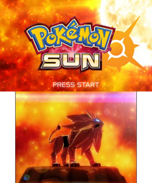 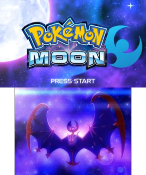 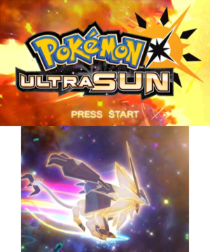 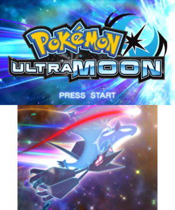
Generation 7
Generation is the Seventh and most recent series of games to release in the Pokemon series. Similar to Generation 5Generation 7 released with a remake off itself in Pokemon Ultra Sun and Ultra Moon bringing the total game tally to 4. These new games released with a more in depth plot that used the theme of space present in Sun and Moon to tell a different story, it also introduced corrupted versioin of the previous legendaries. Generation 7 has no true correlation the the rest of the Generations giving this game a refreshing new feel in a franchise that was constantly being accused of just putting a paintjob over previous Generations. Similar to Generation 6 this game released internationally at the same time being released on the 18th of November worldwide for the 3ds, Ultra Sun and Ultra Moon released one year later on the 17th of November in 2017. Team Skull led by Guzma is the evil team of this Generation. The male playable charcter of this Generation is Sun who stars in all games and female character moon who also stars in all games. The starters of this Generation are Popplio the water type, Litten the fire type and Rowlet the water type.
Gameplay Mechanics
Generation 7 is widely considered to be the easiest of generations due to new mechanics introduced that made the game more accessible for all players. New gameplay mechanics include
- The addition of 81 new pokemon
- 80 new moves
- 41 new abilities
- The ability to move freely in any direction compared to the old 8 grid directional system
- A new pokedex called rotomdex which doubles as a real time map on the lower scree.
- The Island challenge replaced traditional gyms with new totem pokemon that were stronger and larger than normal pokemon with a specific stat being boosted depending on the totem
- A new mechanic called Z-Moves which were only available once per battle and were much stronger than normal moves
- During a battle the bottom screen now displayed the moves effectiveness if you have battled the opposing pokemon before
- Poke Rides which allowed you to access new areas that would normally be inaccessible
- A new SOS system for wild pokemon which allowed wild pokemon to randomly call in an ally and make the encounter a double battle were the player cannot put out a second pokemon
Region
The Alola region based of Hawaii was released in this Generation. The region consists of four islands that are all horizontal to eachother and an artificial island to the South. The islands from left to right are named Poni, MeleMele, Akala and Ula'ula, the artificial island is named aether paradise. The Largest Island is also the most Urban with Akala Island featuring the most cities/towns, Melemele is second, Ula'ula is third and Poni island is mostly uninhabited except for some natives to the island who made a small settlement near the bottom of a lrage mountain range. The Alola region has a lot of mountains and volcanoes with all of the islands featuring at least one mountain or island very similarily to the real place of Hawaii.
Legendaries
Generation 7 features the most catchable legendary pokemon with 11 pokemon in total all of which are catchable in at least one of the games. The Pokemon are Type: null and Silvally these two legendaries are linked through evolution as type: null evolves into Silvally. The Light Trio of Solgaleo, Lunala and Necrozma, Cosmog and Cosmoen who are linked through evolution can evolve into Lunala or Solgaleo depending on the game you bought with moon meaning that they evolve into Lunala and Sun meaning that they evolve into Solgaleo. The Gaurdian Deities represent each of the individual islands with Tapu Koko, Tapu Lele, Tapu Bulu and Tapu Fini each gaurding an island. type: null and Silvally are technically not catchable but is given to you by Gladion in the aether paradise on your second visit. Lunala is only catchable in Pokemon moon and ultra moon and is found at the altar of moone after defeating team Skull and the Aether company, Lunala can only be caught in ultra Sun after catching Necrozma, talking to Gladion and going to the Mahalo trail. The same is true for solgaleo who is only catchable in sun and ultra sun at the altar of sonne, and in ultra sun at the Mahalo trail after catching Necrozma and talking to Gladion. Necrozma is catchable in all games, he is found in ten carat hill in sun/moon after defeating the pokemon league and on the way to the pokemon league in Pokemon Ultra Sun/Ultra Moon. The Gaurdian Deities are all found on their islands in the ruins of origin on all the islands after defeating the pokemon league. Tapu Koko is found at the ruin of conflict on Melemele island, Tapu Lele is found in the ruins of lide on Akala island, Tapu Bulu is found in the ruins of abundance on Ula'ula island and Tapu Fini is found at the ruins of Hope on Poni island. Cosmog is found after going to the altar of sunne/moone and then going throguh the portal and visiting the lake of the version that your not playing, this will give you a Cosmog that evolves into the legendary that you did not retrieve at the altar.

 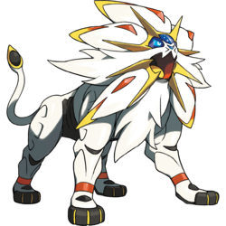
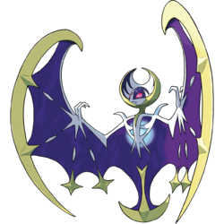
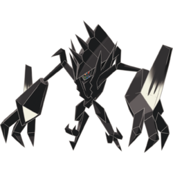
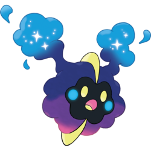
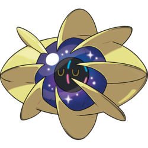
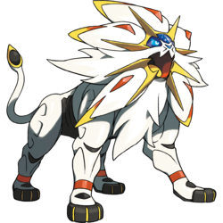
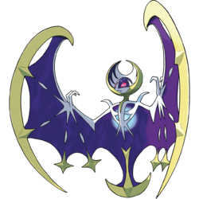
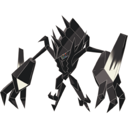
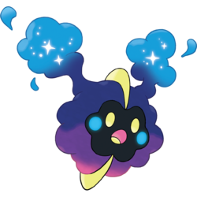
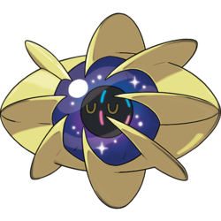